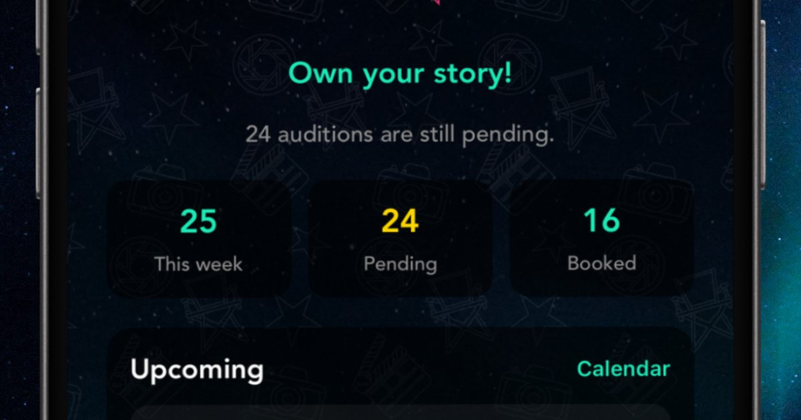

Home
Blog
Support
Contact
Welcome to the blog
Guides for working actors
Raden Films · 19 August 2026
Audition prep: build the choices before you walk in
Read more

Raden Films · 19 August 2026
Self-tape tips: light, frame, sound — then act
Read more
Raden Films · 19 August 2026
Character secrets: something only they know
Read more
Raden Films · 19 August 2026
Getting an agent: treat it like a pitch, not a wish
Read more
Raden Films · 19 August 2026
How to keep an audition log (and stay organised)
Read more